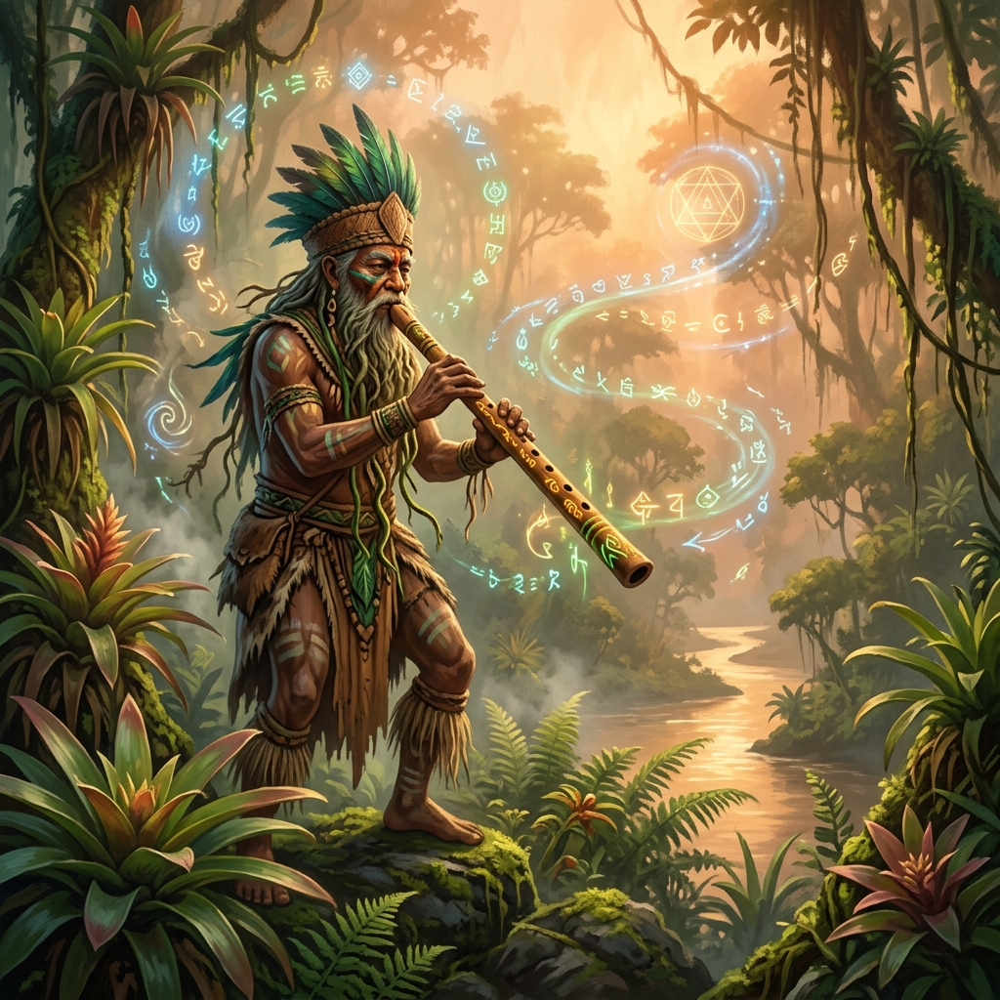

Leyendas Ancestrales
Explora los mitos fundacionales y espirituales que daban sentido al orden social, natural y sagrado de los pueblos originarios de Colombia.
La Leyenda de Yurupary
Nacida en las selvas del Vaupés y la cuenca del río Negro, la leyenda de Yurupary (que significa *"hijo del sol"* o *"fruto engendrado de la tierra"*) relata las leyes fundamentales de organización social de las tribus amazónicas.
Yurupary, un héroe mítico legislador, trajo del sol la flauta sagrada elaborada de madera de palma y enseñó las leyes de la selva, el control social y las máscaras ceremoniales. Su música sagrada estaba reservada exclusivamente a los hombres iniciados de la comunidad.

Furatena y el Origen de las Esmeraldas
El dios creador Are creó los dos sagrados picos de Boyacá, **Fura y Tena**, y sembró en ellos el espíritu de la fidelidad. Furatena, sin embargo, rompió el pacto. Al ver su falta, Tena murió de dolor.
Al llorar sobre el cadáver de su compañero, las lágrimas de Furatena cayeron sobre la arcilla y se convirtieron en las resplandecientes esmeraldas verdes de Muzo, mientras que su sangre dio origen al río Minero.
Goranchacha: El Profeta del Sol
Hijo de un rayo del sol (Sua) concebido por una joven de Guachetá. Goranchacha fue un sacerdote o profeta temido que viajó por el altiplano predicando el orden moral y construyendo un gran templo liso de piedra en Hunza (cerca de Tunja).
Antes de desaparecer misteriosamente, profetizó la llegada de una estirpe de hombres barbados y crueles que derribarían los santuarios de la Confederación.